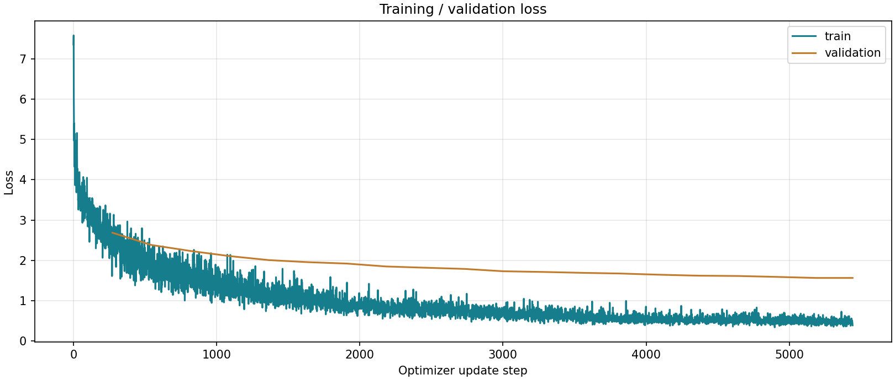
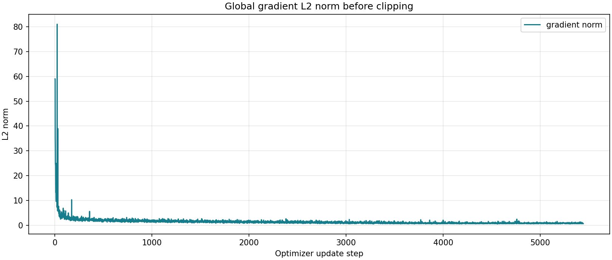
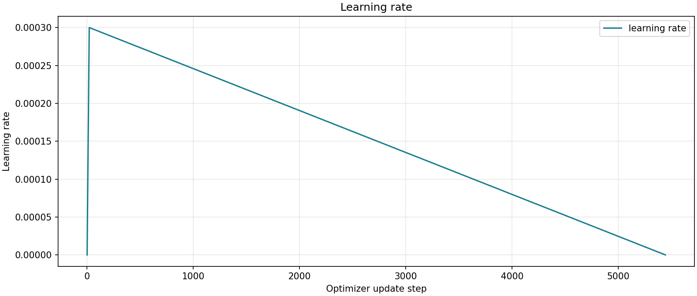
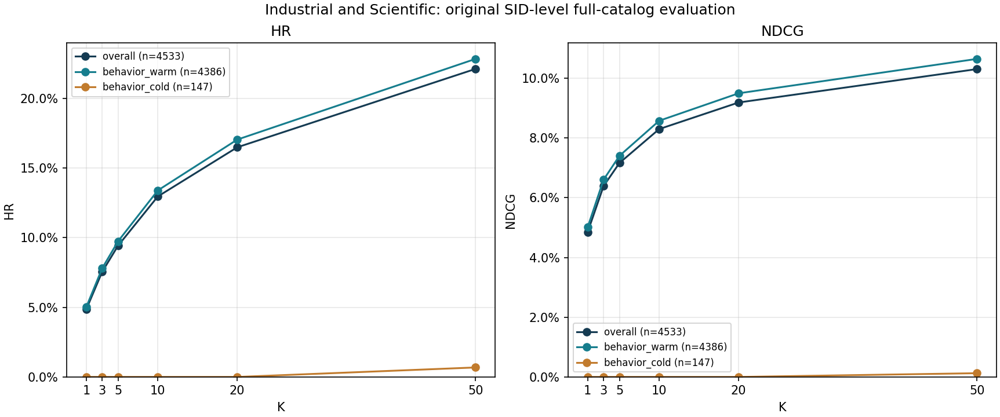

Industrial_and_Scientific 原项目 SFT 实验
北京时间 2026-11-17T16:20:31.114783+08:00 · 训练：completed · 排名评估：passed
复用原始 SID 与数据划分，历史长度1–10；全量商品目录、beam=50、逐原始测试行计算。未运行 RL。
训练 PDF · 验证 PDF · 训练 JSON · 验证 JSON · 分组 CSV
训练
| 项目 | 记录 |
|---|
| 底模 | /mnt/ossdata/ziweizhao/weights/Qwen2.5-0.5B |
| 训练状态 | completed |
| 最佳 checkpoint | /mnt/ossdata/ziweizhao/weights/checkpoints/MiniOneRec/Industrial_and_Scientific_05b_linear_ep3_ep5_title_history_20261117_retry1/epochs3/sft/checkpoint-5187 |
| 梯度统计 | {'count': 5442, 'mean': 1.492007737834854, 'max': 80.96449279785156, 'last100_mean': 0.9095147943496704} |
训练与验证 loss

梯度范数

学习率

整体、冷暖组与 SID 冲突诊断
行为冷按训练行为中的商品 ID 判定，商品仍可参加全目录 SID↔文本辅助训练。HR 在单目标协议下等同 Recall。
| 项目 | 实际值 |
|---|
| 完整测试行 | 4533 |
| 商品数 / 唯一 SID | 3686 / 3670 |
| 冲突 SID 组 / 涉及商品 | 15 / 31 |
| 行为冷商品数 | 37 |
| 冷目标与暖商品共用 SID 的行数 | 0 |
| 分组 | 样本数 | HR@10 | NDCG@10 | HR@50 |
|---|
| overall | 4533 | 12.94948% | 8.30009% | 22.10457% |
| behavior_warm | 4386 | 13.38349% | 8.57827% | 22.82262% |
| behavior_cold | 147 | 0.00000% | 0.00000% | 0.68027% |
| repeat_last | 122 | 91.80328% | 79.94066% | 95.08197% |
| not_repeat_last | 4411 | 10.76853% | 6.31864% | 20.08615% |
| collision_free | 4216 | 8.91841% | 4.90376% | 17.64706% |
| collision_affected | 317 | 66.56151% | 53.47011% | 81.38801% |
| behavior_cold_collision_free | 147 | 0.00000% | 0.00000% | 0.68027% |
| behavior_cold_collision_affected | 0 | — | — | — |
原始 SID 冲突意味着部分商品不可区分；主指标沿用原项目 SID 匹配，同时给出无冲突子组。冷暖、重复与冲突分层维度会重叠，不能把所有行数相加。

复现仓库 SFT-only 对照
The benchmark is Enddonkey/MiniOneRec-Reproduction README SFT Only, self-reported and not independently verified. It uses Qwen2.5-0.5B Base on one A800; this run records Qwen2.5-0.5B on 4 H20 GPUs. Its actual run_config.json governs epochs, tasks, batch and scheduler. Score differences do not establish an exact reproduction.
参考值来自仓库 README 自报结果，未经本实验独立复核；本次底模为 /mnt/ossdata/ziweizhao/weights/Qwen2.5-0.5B，GPU与实际训练设置差异需一并比较。
Enddonkey/MiniOneRec-Reproduction 复现实验报告
| K | 仓库 SFT-only HR | 仓库 SFT-only NDCG |
|---|
| 1 | 5.32000% | 5.32000% |
| 3 | 7.61000% | 6.63000% |
| 5 | 8.93000% | 7.16000% |
| 10 | 11.27000% | 7.92000% |
| 20 | 14.87000% | 8.81000% |
| 50 | 20.76000% | 9.97000% |